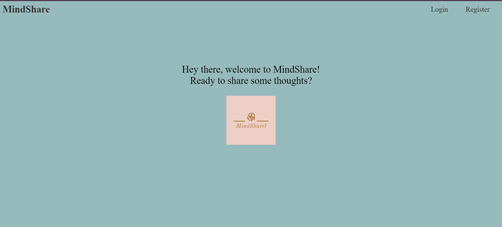
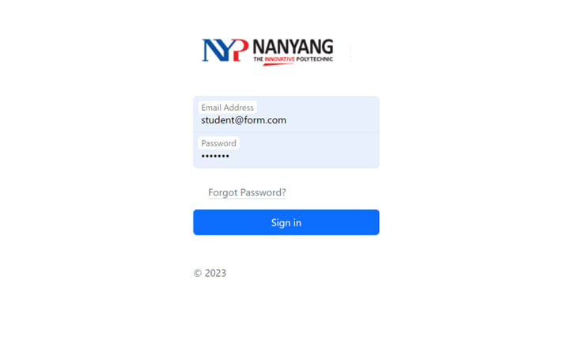
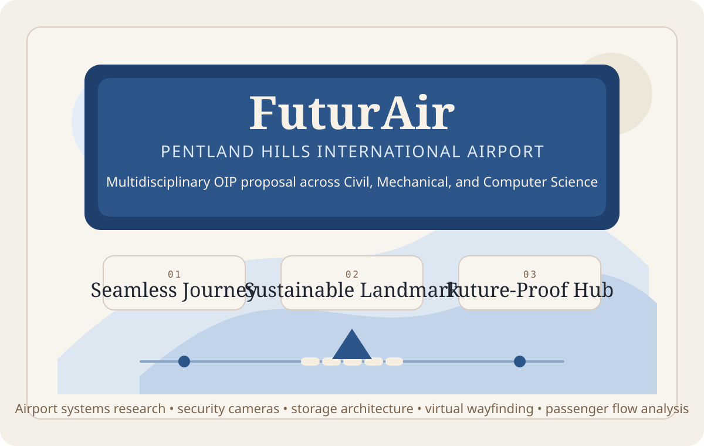
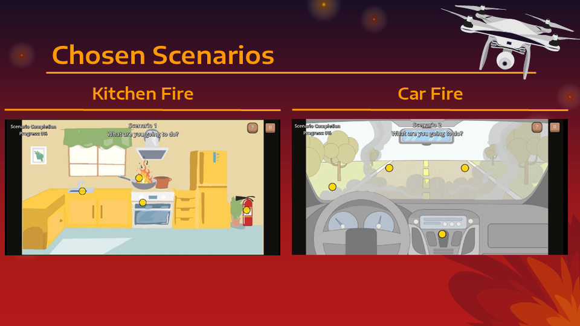
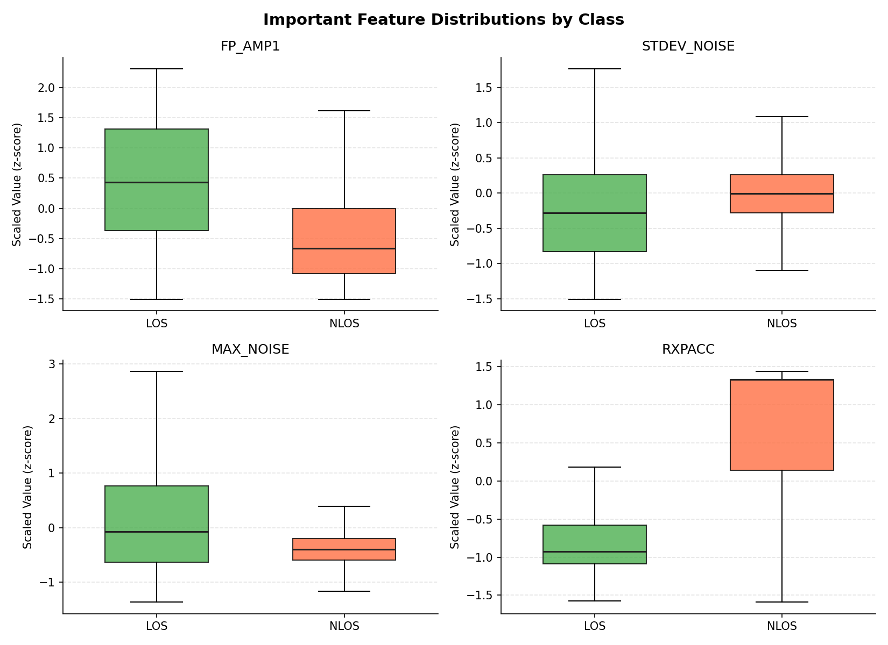
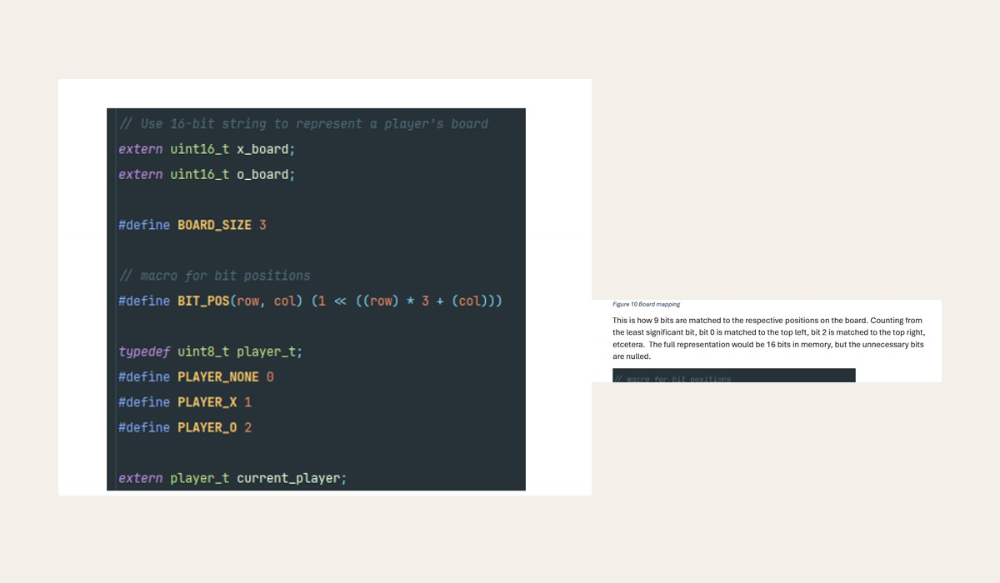
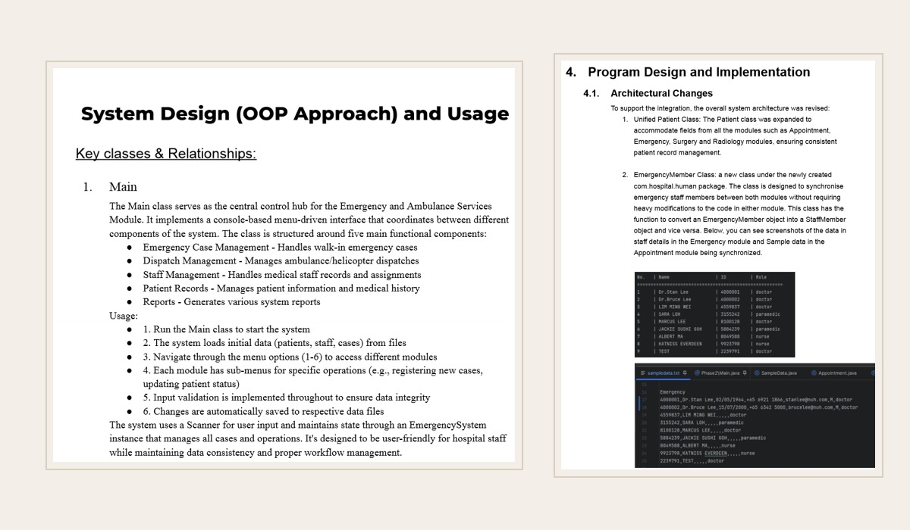
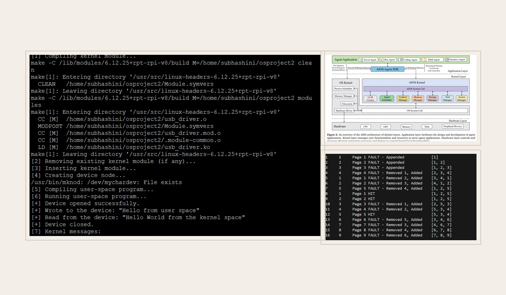

Portfolio
Projects
Diploma - Nanyang Polytechnic
2021-2024
Web Development

POLY - WEB - 01
Portfolio Website
A Year 1 Semester 2 project that started with Illustrator mockups for UI/UX and was then built into a working portfolio website using HTML and CSS.
View project

POLY - WEB - 02
PlayMusic!
A personalised audio web application where users could create accounts, manage playlists, browse a song library, and update account details using a PHP and MySQL workflow.
View project

POLY - WEB - 03
MindShare
A thought-sharing web application built with Node.js, MongoDB, HTML, and CSS where users could post ideas, edit content, update profiles, and connect with other users.
View project

POLY - WEB - 04
Skillset & Interest Mapping
A final-semester group platform that helped students and staff coordinate internships and PRISM projects through resumes, skills, preferences, and a smart matchmaking workflow.
View project
Mobile & App Development


Internship - J.P. Morgan
Mar-Aug 2023
Client Reporting & Messaging

JPM - WEB - 01
Trade Status Website
A website that helped clients review booked deals without manually checking databases, with separate end-of-day and intraday reporting views.
View project
JPM - MSG - 02
Reconciliation Delivery Message
An extension of the Trade Status Website that sent encrypted delivery messages with the latest booked deals to clients automatically.
View project
Monitoring & Automation

JPM - DATA - 03
Database Monitoring
An internal website for monitoring database health and growth using reusable components, APIs, Python functions, and SQL queries.
View project
Scheduled reporting
Daily database emails
Monitoring data transformed into styled reports for the team and management.
JPM - RPT - 04
Database Monitoring Email Report
A daily email reporting workflow that converted monitoring data into readable summaries with tables, styling, and scheduled delivery.
View project
University - SIT × University of Glasgow
2024-Present
Design & Research

UNI - DESIGN - 01
FuturAir Airport Design Proposal
A multidisciplinary OIP project proposing a next-generation international airport hub for Central Scotland, combining sustainability, passenger-journey design, and digital systems thinking across three courses.
View project

UNI - DESIGN - 02
Scenario-Based Fire Preparedness Game
A Year 2 Trimester 1 Human Computer Interaction team project that improved a fire-safety learning game through usability testing, clearer action labels, better feedback, and accessibility-minded UI changes.
View project
Web & Full Stack
Add screenshot / video
UNI - WEB - 01
SITxNVIDIA Web Apps
Production-ready web applications and MVPs built with Laravel (PHP) and Vite.js for the NVIDIA AI Centre.
Add screenshot / video
UNI - WEB - 02
Professional Software Dev
Six-month client-facing software development project with an external industry partner. Details can be updated on completion.
Rust / SQLite
UNI - WEB - 03
Bug Tracking System
A Year 1 Trimester 3 web programming group project built as a Rust and SQLite bug tracking system with role-based authentication, project management, and defect assignment workflows.
View project

Data & Databases

UNI - DATA - 01
GameHub Database System
A Year 1 Trimester 3 Database Systems group project that combined MariaDB and MongoDB in a Flask web app for game developers to manage game data, reviews, platforms, achievements, and regional sales.
View project

UNI - DATA - 02
Warehouse UWB Localization Analytics
A Year 2 Trimester 2 Data Analytics mini-project that used feature engineering, PCA, Random Forest classification, and multi-output regression to model warehouse UWB localization signals under LOS and NLOS conditions.
View project
Systems & Embedded

UNI - SYS - 01
Computer Architecture Mini-Project
A first-trimester university group project that combined direct-mapped cache calculations, user input validation, and a Raspberry Pi tic-tac-toe build mixing C with ARM64 assembly.
View project

UNI - SYS - 02
Emergency & Ambulance Management
A two-phase Java OOP project that began as an emergency and ambulance services module, then expanded into an integrated hospital system with appointment, radiology, and surgery workflows.
View project

UNI - SYS - 03
Operating Systems Project
A Year 1 Trimester 3 Raspberry Pi operating systems project covering Linux kernel modules, user-space communication, Bash and Python scripting tasks, FIFO page replacement, and AI-informed scheduler research.
View project

UNI - SYS - 04
Autonomous 4-Legged Spider Robot
A Year 2 Trimester 1, 2025 embedded systems project building a semi-autonomous rescue robot with 8-servo locomotion, mmWave radar, heat and sound sensing, pathfinding state logic, and LoRa-based command and data transmission.
View project

UNI - SYS - 05
FastReact Distributed Quiz System
A Year 2 Trimester 2 IoT project that used ESP-NOW, AODV-like routing, and local timestamp arbitration to keep wireless first-responder detection fair even under congestion and relay depth.
View project